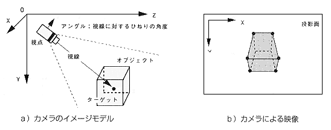

Return to previous page | Return to menu | Go to next page
void
Matrix function
Multiply gaze matrix on current matrix
void slLookAt(camera , target , angz)
FIXED *camera ;
FIXED *target ;
ANGLE angz ;
camera [XYZ] XYZ coordinates representing the camera position target [XYZ] XYZ coordinates representing the target position angz camera angle angle
Multiplies the current matrix with a matrix (line-of-sight matrix) that allows the target to be viewed from the specified camera position at the specified angle.
None
If a gaze direction parallel to the Y axis is selected, the vector on the XZ plane will be smaller (rotation around the Y axis cannot be determined) and may not be drawn correctly, so the gaze direction should not be parallel to the Y axis. Please adjust the value to. The following figure is an image model of gaze.

Reference: Chapter 6 Camera
slLookAt